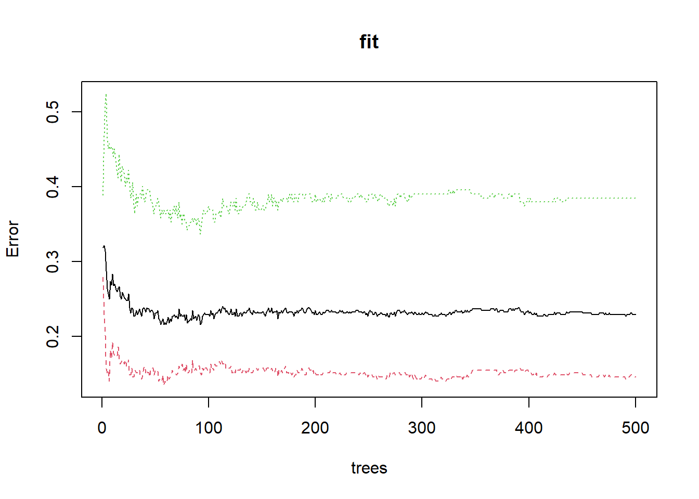
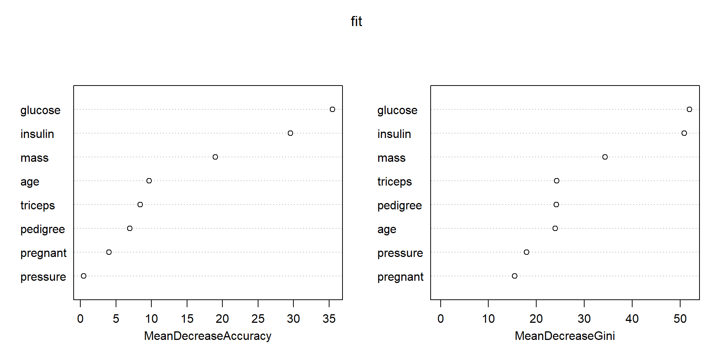
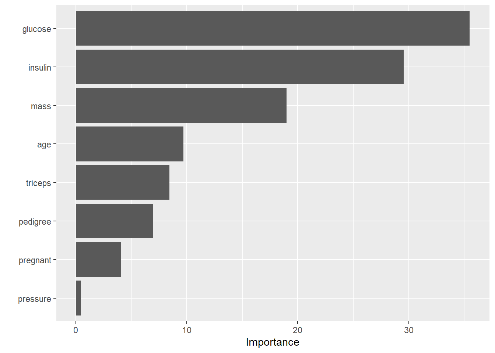
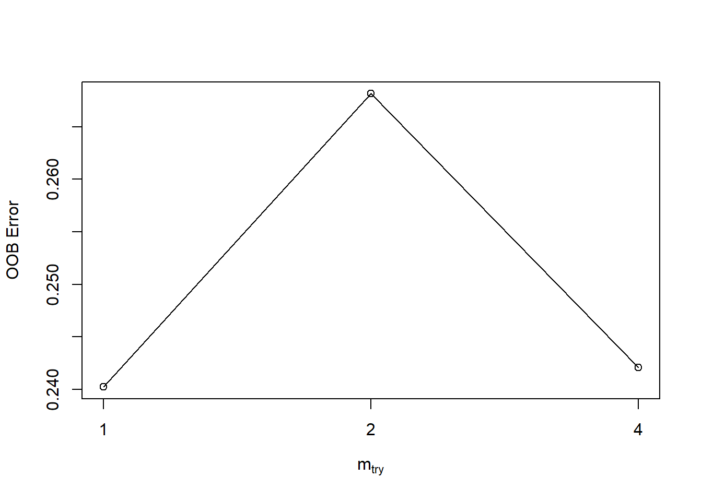

rm(list = ls())
library(randomForest)
load(file = "datasets/pimadiabetes.rdata")
dim(pimadiabetes)
## [1] 768 9
str(pimadiabetes)
## 'data.frame': 768 obs. of 9 variables:
## $ pregnant: num 6 1 8 1 0 5 3 10 2 8 ...
## $ glucose : num 148 85 183 89 137 116 78 115 197 125 ...
## $ pressure: num 72 66 64 66 40 ...
## $ triceps : num 35 29 22.9 23 35 ...
## $ insulin : num 202.2 64.6 217.1 94 168 ...
## $ mass : num 33.6 26.6 23.3 28.1 43.1 ...
## $ pedigree: num 0.627 0.351 0.672 0.167 2.288 ...
## $ age : num 50 31 32 21 33 30 26 29 53 54 ...
## $ diabetes: Factor w/ 2 levels "pos","neg": 2 1 2 1 2 1 2 1 2 2 ...20 随机森林
随机森林是一种集成（ensemble）算法，属于集成算法中的袋装法（bagging）。随机森林可以生成多棵树（决策树）模型，然后将这些树的结果组合起来。
随机森林在建立模型时，会使用自助法（bootstrap）进行重抽样，每次使用大概全部观测的2/3拟合模型，在剩下的1/3的观测中衡量模型性能，这剩下的1/3的数据就被称为袋外数据（out-of-bag），对袋外数据进行的预测就叫袋外预测（out-of-bag prediction），或者叫样本外预测（out-of-sample prediction）。这个过程会重复几十或者几百次，最后取平均结果。
随机森林支持分类、回归、生存分析等多种任务类型，而且对数据的要求不严格，即使不进行预处理也能直接使用（但是不能有缺失值）。
目前R语言做随机森林主要就是ranger和randomForest包。ranger的开发者就是survivalsvm的开发者。ranger是使用c++实现的，速度超快。
但是ranger的相关文档太少了，而且缺少可视化函数，我们主要介绍randomForest。
20.1 加载R包和数据
演示数据为印第安人糖尿病数据集，这个数据一共有768行，9列，其中diabetes是结果变量，为二分类，其余列是预测变量。
20.2 数据划分
划分训练集、测试集。训练集用于建立模型，测试集用于测试模型表现，划分比例为7:3。
# 划分是随机的，设置种子数可以让结果复现
set.seed(123)
ind <- sample(1:nrow(pimadiabetes), size = 0.7*nrow(pimadiabetes))
# 去掉真实结果列
train <- pimadiabetes[ind,]
test <- pimadiabetes[-ind,]
dim(train)
## [1] 537 9
dim(test)
## [1] 231 920.3 建立模型
在训练集拟合模型，参数importance=T表示需要计算变量的重要性：
set.seed(123)
fit <- randomForest(diabetes ~ ., data = train, importance = T)
fit
##
## Call:
## randomForest(formula = diabetes ~ ., data = train, importance = T)
## Type of random forest: classification
## Number of trees: 500
## No. of variables tried at each split: 2
##
## OOB estimate of error rate: 22.91%
## Confusion matrix:
## pos neg class.error
## pos 299 51 0.1457143
## neg 72 115 0.3850267结果给出了树的数量：500颗；OOB错误率；还给出了混淆矩阵。
20.4 结果探索
下面是可视化整体错误率和树的数量的关系，可以看到随着树的数量增加，错误率逐渐降低并渐趋平稳，中间的黑色线条是整体的错误率，上下两条是结果变量中两个类别的错误率。
plot(fit)
查看整体错误率最小时有几棵树：
which.min(fit$err.rate[,1])
## [1] 55查看各个变量的重要性，这里还给出了mean decrease gini，数值越大说明变量越重要：
randomForest::importance(fit)
## pos neg MeanDecreaseAccuracy MeanDecreaseGini
## pregnant 3.076717 2.318634 4.0433361 15.45065
## glucose 26.966011 22.856482 35.5073316 52.00314
## pressure 1.148162 -0.574716 0.4489352 17.98889
## triceps 7.448920 3.465856 8.4222497 24.27110
## insulin 20.385928 20.507513 29.5489019 50.91964
## mass 8.257001 18.574513 18.9842081 34.35775
## pedigree 5.186099 4.690982 6.9584762 24.19246
## age 6.456647 7.064110 9.6989105 23.94584可视化变量重要性：
varImpPlot(fit)
通过变量重要性，大家就可以选择比较重要的变量了。你可以选择前5个，前10个，或者大于所有变量重要性平均值(中位数，百分位数等)的变量等等。
使用随机森林筛选变量，我专门写过一篇文章：R语言随机森林筛选变量
这个图还可以使用ggRandomForests来画，更加好看：
library(ggRandomForests)
gg_dta <- gg_vimp(fit)
plot(gg_dta) #MeanDecreaseGini
或者通过vip来画：
library(vip)
vip(fit) #MeanDecreaseAccuracy
20.4.1 提取某一棵树
会给出这颗树在分支时的各种细节，结果太长了，没放出来：
getTree(fit, k=2)20.4.2 重新建立模型
选择树的数量为55，并重新建立模型：
fit1 <- randomForest(diabetes ~ ., data = train, ntree = 55)
fit1
##
## Call:
## randomForest(formula = diabetes ~ ., data = train, ntree = 55)
## Type of random forest: classification
## Number of trees: 55
## No. of variables tried at each split: 2
##
## OOB estimate of error rate: 24.02%
## Confusion matrix:
## pos neg class.error
## pos 299 51 0.1457143
## neg 78 109 0.4171123查看测试集效果：
pred <- predict(fit1, newdata = test)
head(pred)
## 1 3 4 9 15 17
## neg neg pos neg pos neg
## Levels: pos neg混淆矩阵：
caret::confusionMatrix(test$diabetes, pred)
## Confusion Matrix and Statistics
##
## Reference
## Prediction pos neg
## pos 127 23
## neg 33 48
##
## Accuracy : 0.7576
## 95% CI : (0.697, 0.8114)
## No Information Rate : 0.6926
## P-Value [Acc > NIR] : 0.01776
##
## Kappa : 0.4521
##
## Mcnemar's Test P-Value : 0.22910
##
## Sensitivity : 0.7937
## Specificity : 0.6761
## Pos Pred Value : 0.8467
## Neg Pred Value : 0.5926
## Prevalence : 0.6926
## Detection Rate : 0.5498
## Detection Prevalence : 0.6494
## Balanced Accuracy : 0.7349
##
## 'Positive' Class : pos
## 准确率0.7576，效果一般。
# 计算预测概率，准备绘制ROC曲线
pred <- predict(fit1, newdata = test, type = "prob")
head(pred)
## pos neg
## 1 0.3454545 0.6545455
## 3 0.4181818 0.5818182
## 4 1.0000000 0.0000000
## 9 0.1454545 0.8545455
## 15 0.6181818 0.3818182
## 17 0.3272727 0.6727273ROC曲线：
library(pROC)
# 提供真实结果，预测概率
rocc <- roc(test$diabetes, as.matrix(pred)[,1])
rocc
##
## Call:
## roc.default(response = test$diabetes, predictor = as.matrix(pred)[, 1])
##
## Data: as.matrix(pred)[, 1] in 150 controls (test$diabetes pos) > 81 cases (test$diabetes neg).
## Area under the curve: 0.8438
plot(rocc,
print.auc=TRUE,
auc.polygon=TRUE,
max.auc.polygon=TRUE,
auc.polygon.col="skyblue",
grid=c(0.1, 0.2),
grid.col=c("green", "red"),
print.thres=TRUE)
训练集的ROC曲线怎么画呢？
# 也是先计算预测概率
pred_train <- predict(fit1, newdata = train, type = "prob")
library(pROC)
# 提供真实结果，预测概率
rocc <- roc(train$diabetes, as.matrix(pred_train)[,1])
rocc
##
## Call:
## roc.default(response = train$diabetes, predictor = as.matrix(pred_train)[, 1])
##
## Data: as.matrix(pred_train)[, 1] in 350 controls (train$diabetes pos) > 187 cases (train$diabetes neg).
## Area under the curve: 1
plot(rocc,
print.auc=TRUE,
auc.polygon=TRUE,
max.auc.polygon=TRUE,
auc.polygon.col="skyblue",
grid=c(0.1, 0.2),
grid.col=c("green", "red"),
print.thres=TRUE)
训练集的AUC是1，但测试集的AUC只有0.84，严重的过拟合，随机森林本身就是容易过拟合的模型，它的各种超参数也都是降低模型复杂度，防止过拟合的。
随机森林的网格搜索超参数调优可以通过caret、mlr3、tidymodels实现，caret法之前已介绍过，可参考：R语言机器学习caret-10：随机森林的小例子
20.5 超参数调优
randomForest自带一个调优函数：tuneRF()，可以实现对mtry的调优：
#?tuneRF
tuneRF(x = train[,-9], y = train$diabetes)
## mtry = 2 OOB error = 26.82%
## Searching left ...
## mtry = 1 OOB error = 24.02%
## 0.1041667 0.05
## Searching right ...
## mtry = 4 OOB error = 24.21%
## -0.007751938 0.05
## mtry OOBError
## 1.OOB 1 0.2402235
## 2.OOB 2 0.2681564
## 4.OOB 4 0.2420857结果如上图。
轻量化的调参我还是推荐使用e1071包实现。
其中的tune.randomForest()可实现对随机森林中mtry、nodesize、ntree3个超参数的调节，默认使用10折交叉验证法。
mtry：每次分支时使用的预测变量数量，肯定是介于 1个~预测变量个数，之间nodesize：终末节点的样本量，如果这个数量特别大，那肯定树的深度就不会很深，可以防止过拟合ntree：使用的树的数量，对于随机森林来说这个数量肯定是越多越好，通常选500或1000
library(e1071)
tune_res <- tune.randomForest(x = train[,-9], y = train$diabetes,
nodesize = c(1:3),
mtry = c(2,4,6,8),
ntree = 500
)
#save(tune_res,file = "datasets/tune_res.rdata")load(file = "datasets/tune_res.rdata")
tune_res
##
## Parameter tuning of 'randomForest':
##
## - sampling method: 10-fold cross validation
##
## - best parameters:
## nodesize mtry ntree
## 3 5 500
##
## - best performance: 0.06731802查看错误率：
tune_res$performances
## nodesize mtry ntree error dispersion
## 1 1 2 500 0.07100520 0.003384379
## 2 2 2 500 0.07087212 0.003004106
## 3 3 2 500 0.07089114 0.003181621
## 4 1 5 500 0.06845834 0.003377654
## 5 2 5 500 0.06785020 0.003619697
## 6 3 5 500 0.06731802 0.003680636
## 7 1 9 500 0.07035890 0.003786503
## 8 2 9 500 0.06956064 0.003933042
## 9 3 9 500 0.06838229 0.003646747最小错误率：
tune_res$best.performance
## [1] 0.06731802最好的模型：
tune_res$best.model
##
## Call:
## best.randomForest(x = train_df[, -1], y = train_df$children, nodesize = c(1:3), mtry = c(2, 5, 9), ntree = 500)
## Type of random forest: classification
## Number of trees: 500
## No. of variables tried at each split: 5
##
## OOB estimate of error rate: 6.82%
## Confusion matrix:
## children none class.error
## children 1357 2854 0.67774875
## none 733 47672 0.01514306有了这个结果你就可以像上文一样，使用最好的超参数重新拟合模型了。
注释
随机森林由于是集合了多棵树的集成模型，所以它天生就是一个容易过拟合的模型，基本上它的调优思路就是限制模型复杂度，防止模型过拟合。它的很多参数都可以显示模型复杂度，比如树的数量、节点样本数、分支样本数等，调优时多个限制复杂度的参数不需要同时调整，只需要选择其中1~2个即可。
20.6 其他
除此之外，randomForest还可以进行：
- 缺失值插补：
rfImpute()和na.roughfix - 异常值检测：
outlier()
大家自己探索下即可。
后台回复随机森林可获取相关推文合集，回复caret、mlr3、tidymodels也可获取相关推文合集。